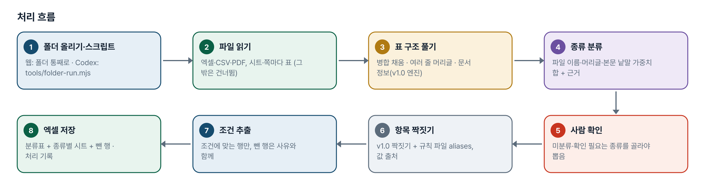
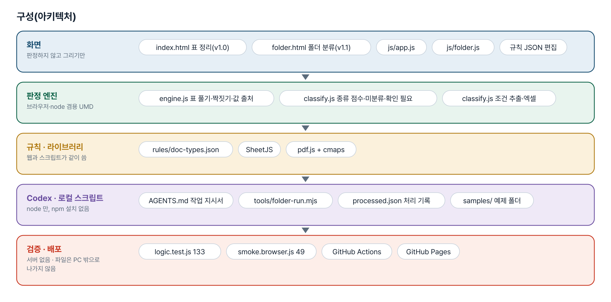
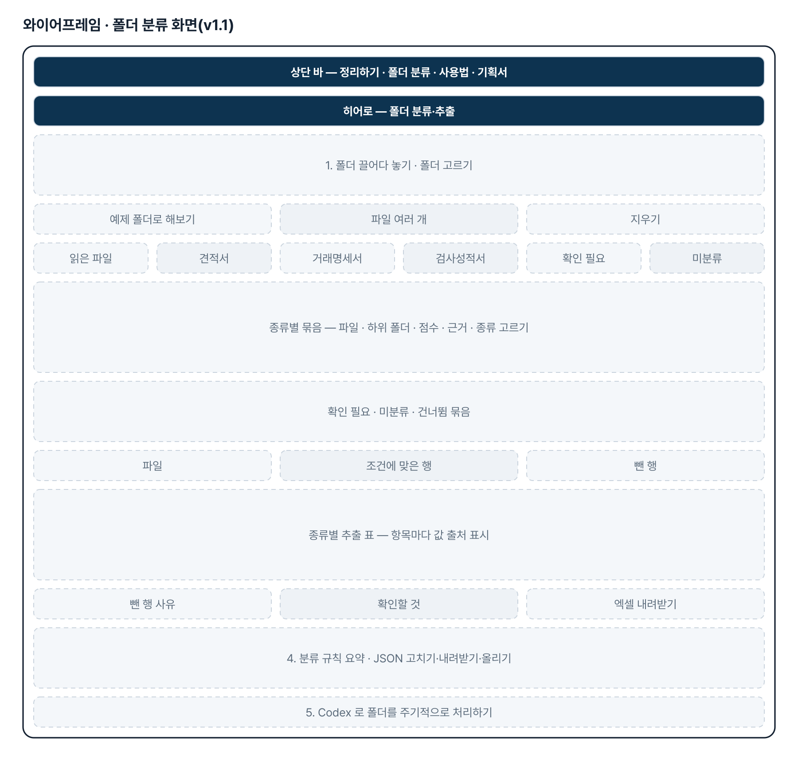
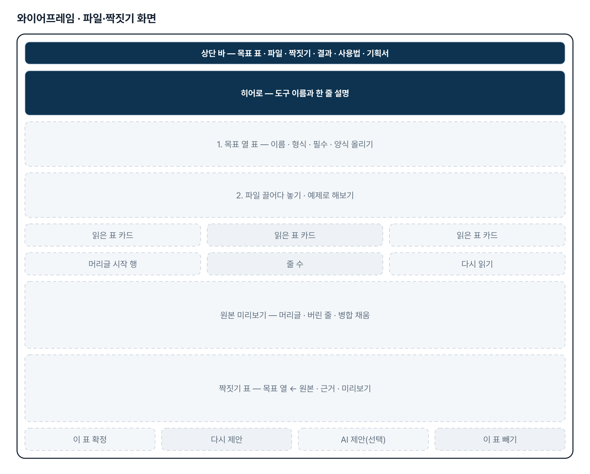
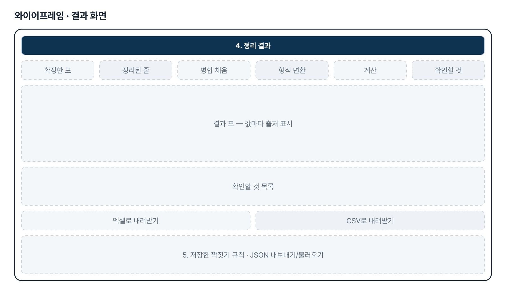
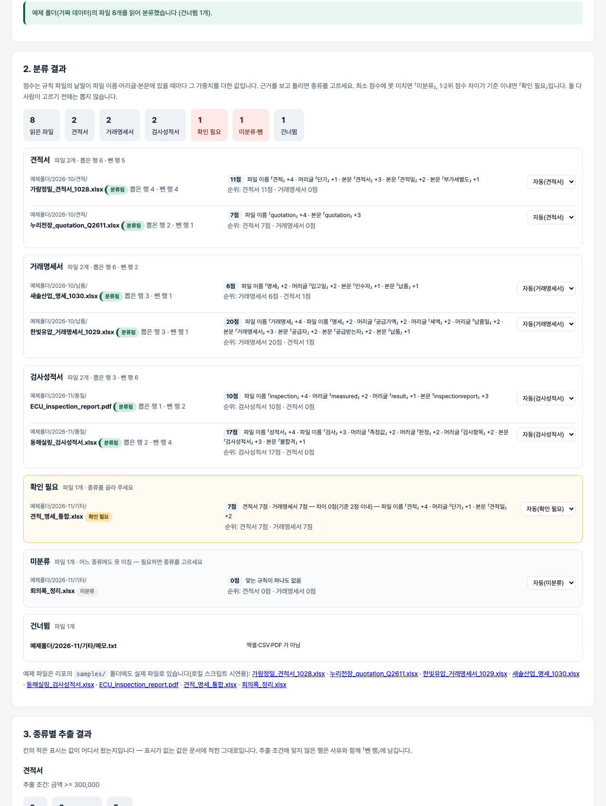

기획서 내려받기
파이프라인 · 아키텍처 · 와이어프레임 · 개발일지가 들어간 워드 문서입니다. 버전마다 따로 남깁니다.
| 버전 | 날짜 | 바뀐 점 | 파일 |
|---|---|---|---|
| v1.1 | 2026-11-03 | 추가 요청(게시물 4128450933 「추가개선 방안」) — 폴더 단위 자동 분류·추출 / 폴더 분류 화면(folder.html): 폴더 통째로 올리기·종류별 묶음·근거·미분류/확인 필요·조건 추출·엑셀(분류표+종류별 시트) / 분류 규칙 파일 rules/doc-types.json · 판정 모듈 js/classify.js · 화면에서 규칙 편집 / Codex 용 AGENTS.md + 로컬 스크립트 tools/folder-run.mjs(PDF 포함, 처리 기록) · 예제 폴더 samples/ / 테스트 판정 63→133 · 화면 24→49 | 워드 내려받기 |
| v1.0 | 2026-11-02 | 첫 판 — 목표 열 정의·여러 시트·병합·여러 줄 머리글·PDF 읽기, 짝짓기 제안·확정, 값 출처, 엑셀·CSV, 규칙 저장 / 기획서 워드 판·파이프라인·아키텍처·와이어프레임 추가 | 워드 내려받기 |
요구사항과 구현
| 기획서 요구 | 구현 |
|---|---|
| 정리된 최종 결과 표 구조는 정해져 있음 | 목표 열(이름·형식·필수)을 화면에서 정의하거나 양식 엑셀로 올림 |
| 형태·컬럼명이 표준화되어 있지 않음 | 열 이름 유사도(같은 뜻 낱말 표·포함·글자 비슷함) + 값 모양으로 짝 제안, 신뢰 높음/보통/낮음 |
| AI 가 어느 정도 가이드 제공 | 선택: OpenAI·Anthropic 키로 열 이름+예시 값 3개만 보내 짝 제안 — 「AI 초안 — 검토 필요」 |
| 사람이 판단하여 빠르게 정리 | 짝마다 고르는 칸·근거·미리보기, 표별 확정, 제안대로 모두 확정 |
| Sheet 가 여러 개 · 셀 병합 | 시트마다 표 하나, 병합 범위 값 채움(「병합 채움」 표시), 병합 머리글을 여러 줄 머리글로 합침 |
| 다양한 원하는 데이터 추출 | 머리글 위 「항목 : 값」을 문서 정보로 뽑아 열처럼 짝지음, 시트·파일 이름·직접 입력 |
| pdf.js 글자 좌표 → 줄(y)·칸(x) 묶기 → 같은 표 처리 | |
| 데이터베이스 등록 | 이번 판은 제외 — 엑셀(4장)·CSV 내려받기 |
| (v1.1) 특정 폴더에 등록된 문서를 자동 분류 | 폴더 통째로 올리기(하위 폴더 경로 표시), 규칙 파일의 낱말·가중치로 종류 점수와 근거, 미분류·확인 필요는 사람이 고름 |
| (v1.1) 특정 조건의 데이터를 자동 추출·저장 | 종류별 뽑을 항목(v1.0 목표 열 형식)을 v1.0 짝짓기로 찾고 추출 조건(≥·기간·낱말 포함 등)으로 거름, 분류표+종류별 시트 엑셀 |
| (v1.1) Codex 를 최대한 활용 | AGENTS.md(Codex 작업 지시서) + tools/folder-run.mjs(같은 엔진·같은 규칙 파일, npm 설치 없음, 처리 기록으로 건너뛰기) |
| (v1.1) 웹페이지에 분류된 문서와 결과 | 종류별 묶음 → 파일 목록(점수·근거) → 추출 행(값 출처) → 조건에 맞은 행/뺀 행 수 |
그림으로 보기






개발일지
2026-11-13 · 마무리 — 로그인 · 게시판 · 첫 화면(판 2026-11-13.1)
- 과정 마무리 묶음을 붙임(마산 2차수 과제와 같은 키트) — 로그인 전 첫 화면(사진 3장 · 기능 · 사용 순서 · 기획서), 회원가입 → 사용 신청 → 관리자 승인, 게시판 · 새 글 알림, 내 정보, 관리(구성원 승인 · 첫 화면 모양)
- Supabase 표 · 함수 · 정책은 전부 build261102_ 로 시작(auth.sql · board.sql · site.sql). 과정용 프로젝트에 적용했고, supabase/README.md 순서대로 본인 프로젝트로 옮길 수 있음
- 도구의 계산 · 판정 · 저장 방식은 그대로(업무 자료는 지금처럼 브라우저 안에서만 처리). 기획서 · 사용법 쪽은 로그인 없이 읽음
- 내 PC(파일로 열기 · localhost)에서는 로그인을 건너뜀 — 주소 끝에 ?auth=1 을 붙이면 로그인 화면을 볼 수 있음
2026-11-03 · v1.1 폴더 분류·추출
- 추가 요청 원문(패들릿 게시물 4128450933 「추가개선 방안」): CODEX를 사용하고 있는 상황이고 특정 폴더에 등록된 문서를 자동 분류하고 특정 조건의 데이터들을 자동으로 추출하여 저장하는 할 때 Codex 를 최대한 활용하여 정리 및 데이터를 추출하고 웹페이지에 분류된 문서와 결과를 보여주는 형태로 구성하고 싶습니다.
- 판정 모듈 classify.js — 규칙 검사, 종류 점수·근거, 미분류·확인 필요, 항목 짝짓기(aliases), 추출 조건, 엑셀
- 화면 folder.html — 폴더 올리기·끌어다 놓기, 종류별 묶음, 추출 결과, 규칙 편집, Codex 안내
- 로컬 스크립트 tools/folder-run.mjs(node 에서도 pdf.js 로 PDF 읽기) · AGENTS.md · samples/ 9개
- 판정 테스트 133 · 화면 테스트 49 통과
2026-11-02 · 첫 판
- 패들릿 build02 Wang Jeon 「문서정리기능」을 작업 지시서(CLAUDE.md)로 옮기고 구현
- 판정 엔진 engine.js — 병합 채우기, 머리글·문서 정보, PDF 좌표, 짝짓기, 변환·출처, 규칙
- 화면 — 목표 열·파일·미리보기·짝짓기·결과·규칙·AI(선택)
- 판정 테스트 63 · 화면 테스트 24 통과, 배포